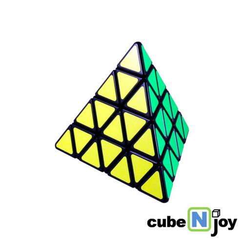

소개
개요
루빅스 큐브(Rubik's Cube)은 퍼즐의 일종으로, 보통 작은 여러개의 정육면체가 모여 만들어진 하나의 큰 정육면체 형태이며, 각 방향으로 돌아가게끔 만들어져서 흩어진 각 면의 색깔을 같은 색깔로 맞추는 것이다. 큐브 퍼즐은 1974년 헝가리의 루비크 에르뇌(Ernő Rubik)가 ‘마술 큐브(Magic cube)’라는 이름으로 발명하고, 1980년 루빅스 큐브라는 이름으로 처음 시판되었다. 현재에는 루빅스 큐브라는 브랜드 이외에도 빠른 큐브 솔빙을 위한 스피드 큐브를 생산하는 브랜드가 여럿 생겨났는데, 그 중 중국의 브랜드들이 가장 뛰어난 성능을 자랑하고 있다. 대표적으로는 뭐위, 간큐브, 치이 등의 브랜드가 있다. 루빅스 큐브가 돌면서 생기는 조합은 43,252,003,274,489,856,000 개이며, 이 수중 큐브를 다 맞출 수 있는 경우는 오직 하나 뿐이다. 현재 3x3x3 큐브 종목의 단일 세계신기록을 가지고 있는 선수는 중국의 Yusheng Du로 3.47초를 기록하였으며, 평균 세계신기록(5회 측정, 최고 기록과 최하 기록은 평균에서 제외)은 오스트레일리아의 Feliks Zemdegs 선수가 평균 5.80초를 기록하였다.
경우의 수
일반적인 3×3×3 루빅스 큐브 퍼즐은 8개의 꼭짓점 조각과 12개의 모서리 조각을 가지고 있다. 큐브 조각의 순열을 특정 조각을 특정 위치에 넣는 것, 큐브 조각의 오리엔테이션을 각 조각의 방향을 바꾸는 것으로 정의할 때, 꼭짓점 조각의 순열은 8! (40,320)가지 경우가 있다. 그중 한개를 기준점으로 삼으면 나머지 7개의 꼭짓점 조각은 각각 독립적으로 3가지의 오리엔테이션을 가지며 따라서 이는 37 (2,187)가 된다. 12개의 모서리 조각의 순열은 총 12!/2 (239,500,800)가지가 있다 (꼭짓점의 순열이 짝순열이므로 모서리 조각의 순열도 짝순열). 이 모서리 조각들 중 하나를 기준으로 나머지 11개의 조각들은 각각 독립적으로 오리엔테이션 될 수 있으므로 다시 211 (2,048)을 곱해야 한다. 일반적인 루빅스 큐브에서 중앙 조각은 위치가 축에 고정되어있고, 면이 한개뿐이라 어떤 방향성을 가지던지 큐브를 맞추는 것과는 상관없기 때문에 고려하지 않았다.
8! X 3^{7} X (12!/2) X 2^{11} = 43,252,003,274,489,856,000
이는 약 43×1018이다.
루빅스 큐브는 때때로 "몇십억개의 경우의 수를 가진다" 라고 광고되는데 이는 더 큰 수들은 많은 사람들에게 익하지 않기 때문이다. 사실, 루빅스 큐브의 경우의 수는 모든 경우의 수만큼 루빅스 큐브가 존재한다고 가정했을 때 지구의 표면을 275번 덮을 수 있을 정도로 큰 수이다.
위에 제시된 숫자는 루빅스 큐브를 회전을 통해서 섞을 수 있는 경우의 수만을 계산한 것이다. 만약 큐브를 무작위로 해체하고 재조립하는 과정을 통하여서도 섞을 수 있다면 경우의 수는 12배나 증가한다.:
8! X 3^{8} X 12! X 2^{12} = 519,024,039,293,878,272,000
결국 큐브 해체를 통해서 섞는다면 약 519×1018가지의 방법이 가능한 것이다. 하지만 이중에 큐브를 회전만을 통하여 다시 맞출 수 있는 경우는 전체의 1/12밖에 되지 않는다. 이는 어떤 회전을 통하여도 단 두개의 조각만 서로 바꾸거나 한개의 꼭짓점 또는 모서리 조각만을 독립적으로 회전시킬 수 없기 때문이다. 결과적으로 큐브는 12개의 다른 조각 배열을 가지게 되며 이러한 조각 배열의 집합을 "군"이라고 부른다.
큐브의 종류
N x N x N
2x2x2 큐브
4x4x4 큐브
13x13x13 큐브
피라밍크스
큐브
큐브
큐브
정십이면체 큐브
메가밍크스
기가밍크스
테라밍크스
기타
기록
종목별 기록
| 종목 | 기록 | 기록보유자 | 국적 | 대회 | 세부기록 | |
|---|---|---|---|---|---|---|
| 3x3x3 Cube | Single | 3.47 | Yusheng Du | China | Wuhu Open 2018 | |
| Average | 5.69 | Feliks Zemdegs | Australia | Koalafication Brisbane 2019 | 6.90 5.64 5.57 5.79 5.63 | |
| 2x2x2 Cube | Single | 0.49 | Maciej Czapiewski | Poland | Grudziądz Open 2016 | |
| Average | 1.21 | Martin Vædele Egdal | Denmark | Kjeller Open 2018 | 1.06 1.09 1.64 1.47 1.07 | |
| 4x4x4 Cube | Single | 17.42 | Sebastian Weyer | Germany | Danish Open 2019 | |
| Average | 21.13 | Max Park | United States | SacCubing IV 2018 | 22.63 19.81 24.13 20.96 18.42 | |
| Megaminx | Single | 27.81 | Juan Pablo Huanqui | Peru | CubingUSA Nationals 2018 | |
| Average | 30.39 | Juan Pablo Huanqui | Peru | Wuxi Open 2019 | 30.12 28.50 31.19 29.97 31.07 | |
| Piraminx | Single | 0.91 | Dominik Górny | Poland | Byczy Cube Race 2018 | |
| Average | 1.86 | Tymon Kolasiński | Poland | Grudziądz Open 2019 | 1.05 2.13 2.30 1.94 1.51 | |
관련영상
2019년 기준 세계기록 영상